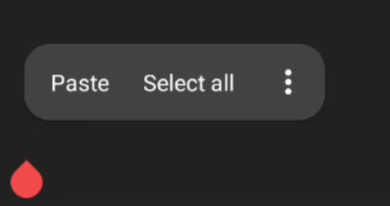
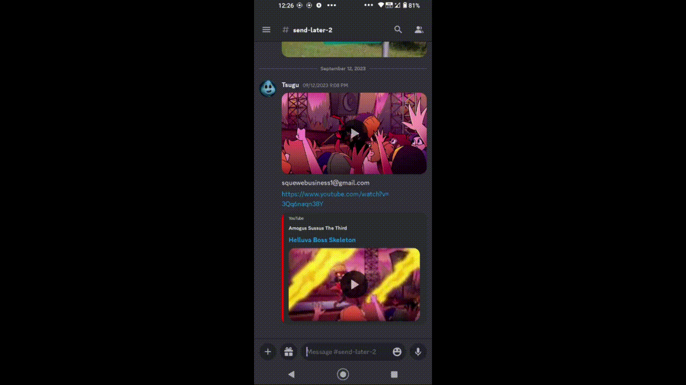

Android hardening
No, I'm not talking about buying a Pixel and flashing Graphene. I'm talking about standard android found in most devices. Although this tutorial should work just fine with Graphene and Lineage as well.
Attack vectors
I am by no means a security expert, so everything on here is just my way of hardening my devices. If your bank account gets cleared out, don't look at me.
The way I see it, there are two main attack vectors on Android:
An app accessing your file system and sending sensitive data to its server of choice
Picture this. Your friends are all using Discord, therefore your choices are to find new friends or download the app. Let's assume you are mentally okay, and download Discord. The first permission it will ask of you is File Access. With this, you can easily pick an image you want to send. Yay!...And you also made it possible for discord to access any image on your device. Oops. This one is pretty easy. Hold the app icon, then go to App Info > Permissions > Files and Media > Don't allow
Very straightforward. I advise you don't stop reading here, as you are not fully safe yet.
An app accessing your clipboard and also sending its content to a random server
Have you ever noticed this?
This innocent looking "paste" indicates that the app you are using can access your clipboard at any time, not just when you press the button. Don't believe me? Read up on it here. And before anuone says "But Tsugu, Android has implemented a feature that lets you know when an app has pasted text from the clipboard!", please tell me, how exactly does this matter if the text is already in possesion of a remote server?
A very simple way of mitigating this without loosing any functionality is to:
- Install ADB (Android Debug Bridge) - On GNU/Linux systems it's a matter of a single command. On Windows, good luck.
- We will also need an app called Package Manager to be installed on your Android device. You can grab it from F-droid..
- Go into your Android's developer settings. You can enable them by scrolling down in your main settings window, finding About phone, and quickly tapping on the Build number. You will know when to stop when a message telling you that you are a developer pops up.
- Once there, find an option called USB Debugging and turn it on.
- On your PC, head over to the terminal and type
adb devices. A message should popup on your phone prompting you to allow access from your computer. Accept it. - On your phone, open Package Manager, and type in Discord as an example. You should see an entry saying
com.discord. This is how the package is actually named. Discord is just a display name, and your phone wouldn't recognize it. Mind you, not all package names are just com.[app's name]. For example my gallery app's package name iscome.simplemobiletools.gallery.pro - In your terminal, type in
adb shell appops set com.discord READ_CLIPBOARD ignore. Now Discord can't access your clipboard. We can verify this by typingadb shell appops get com.discord. It will list all of the permissions, and if there is ignore besides READ_CLIPBOARD, you have succeeded.
Have you accidentally forbidden your keyboard from accessing the clipboard or something like that? adb shell appops set com.name.name2 READ_CLIPBOARD allow.
I also mentioned that you will not lose any functionality, yet not being to paste stuff into an app seems like a very big deal;, right? wellll, every keyboard allows you to paste directly from within itself, which looks something like this:
I know that at first glance it seems like a lot of steps, but it could be summed up as "forbid clipboard access via ADB". So, now Discord can't access our file system, nor our clipboard. Are we safe yet? Safe from Discord, relatively yes. It can still talk to its servers, obviously, but you can't forbid a chat app from accessing the internet.
Built-in telemetry and other apps that should not have internet access
While using the Package Manager, you may have noticed a few intersting apps being installed on your device by default. In case of my Nokia 5.4, it's several packages sending telemetry over to the HMD, as well as telemetry packages by Qualcomm and Google. Let me show you an easy way of setting up a firewall that prevents even the system apps from connecting anywhere.
- We will need NetGuard, a firewall app that pretends to be a VPN but doesn't route your traffic anywhere. It makes use of an android feature allowing you to select which apps should be routed via a VPN and which ones should not. Adter you
- Open it, go into the Settings > Advanced options > Manage system apps
- In order to see them, you might need to open the main page of NetGuard, press the third button from the right, and select Show system apps
- Search for the offending app, and simple press the WiFi and Data symbol. They should turn red and get crossed
This obviously works on user apps as well, so feel free to forbid this access to any app that doesn't necessarily need it. The less apps being able to connect to the internet, the smaller the attack vector becomes.
Your default keyboard
In the featured gif, I was not using Gboard or Microsoft Swiftkey, as they are highly insecure. I reccommed you to use OpenBoard, a libre fork of Gboard.
Summary
Make sure to forbid internet access to apps that can function without it, and also forbid apps from accessing your clipboard.